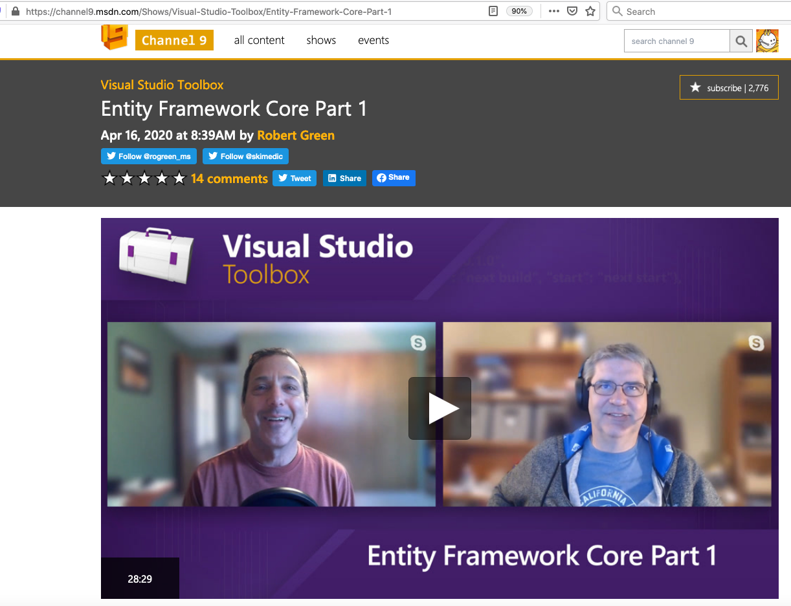
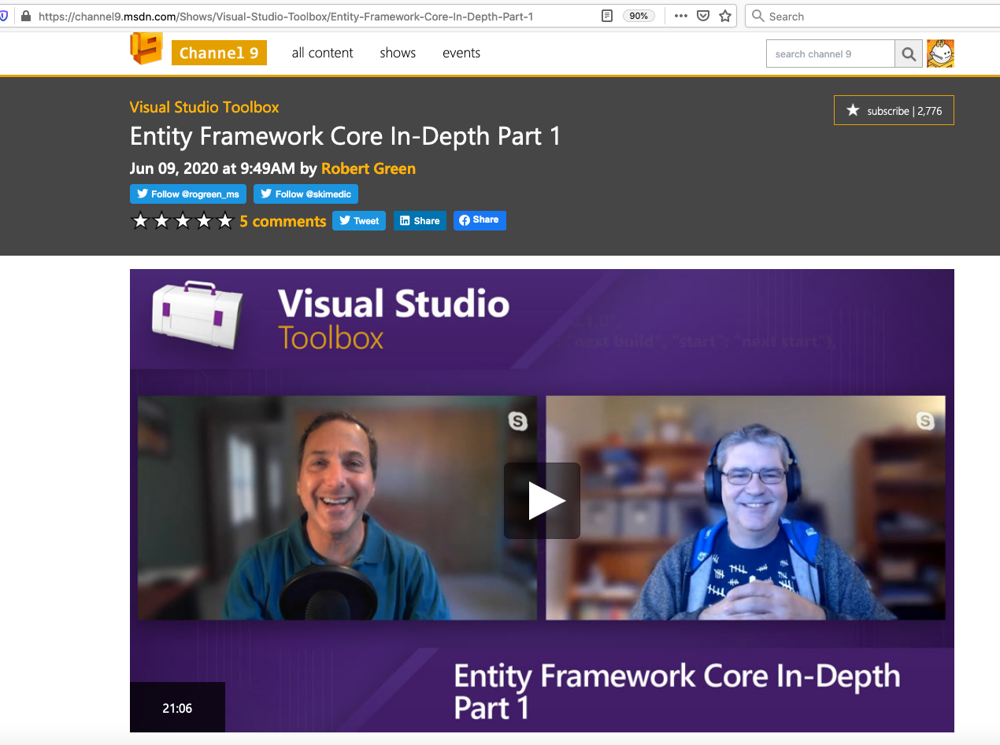

關於 Entity Framework Core 目前找到三組視頻，都很不錯。


https://github.com/Microsoft/sql-server-samples/releases/tag/adventureworks
AdventureWorks sample databases，我有成功使用 2014 .
雖然，這是在 EF，但是LINQ 的用法是一樣的。
https://docs.microsoft.com/en-us/dotnet/framework/data/adonet/ef/language-reference/method-based-query-syntax-examples-join-operators